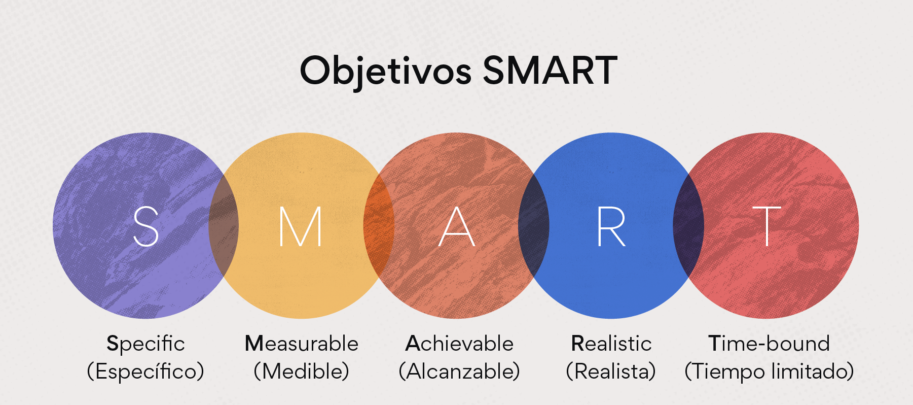
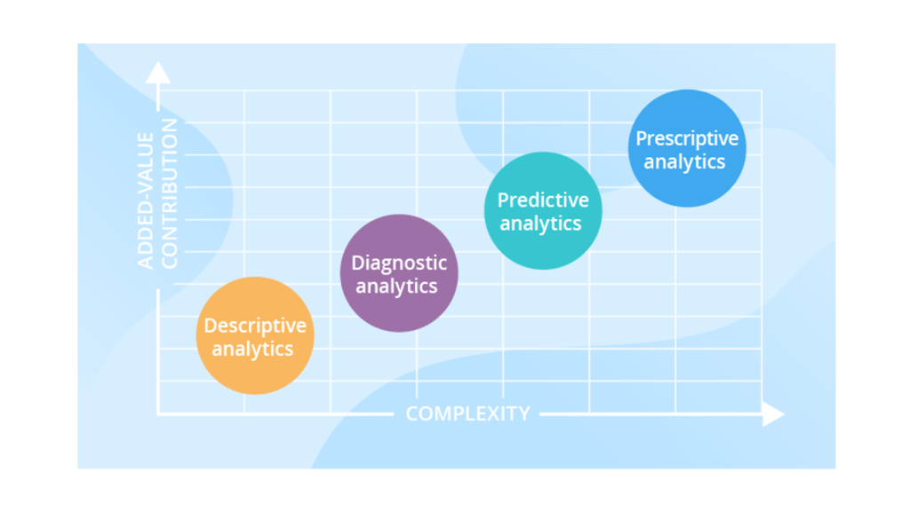

Capítulo 2 Scoping
El scoping es uno de los pasos más importante en los proyectos de ciencia de datos, es ideal realizarlo con ayuda del cliente, tiene como objetivo definir el alcance del proyecto, definir los objetivos, conocer las acciones que se llevaran acabo, conocer si los datos son relevantes y suficientes, proponer soluciones analíticas, entre otros puntos que se tocaran a continuación.

El proceso a seguir es el siguiente:
Definir objetivo(s)
Considerado el paso más importante del proceso, los stakeholders iniciaran con un planteamiento del problema de manera muy general, nuestra responsabilidad será ir aterrizando ideas y definir el problema de manera más concreta, esta parte del scoping puede ocurrir en distintas iteraciones.
Necesitamos hacer que el objetivo sea concreto, medible y optimizable. Cuando se van refinando objetivos, es común que se vaya priorizando por lo que tendremos tradeoffs que irán ligados a las acciones y al contexto del negocio.

¿Qué acciones o intervenciones existen que serán mejoradas a través de este proyecto?
Debemos definir acciones concretas, si esto no ocurre es muy probable que la solución no sea implementada por lo que el proyecto no tendrá uso y no se estará haciendo ciencia de datos.
La implementación del proyecto debería ayudar a tener mejor información para llevar acabo estas acciones, es decir, el proyecto mejorará la toma de decisiones basadas en la evidencia de los datos.
Hacer una lista con las acciones ayuda a que el proyecto sea accionable, es posible que estas acciones no existan aún en la organización, por lo que el proyecto puede ayudar a generar nuevas acciones.
Es muy común que la acción definida por el stakeholder sea de muy alto nivel, en ese caso podemos tomar 2 caminos en el scoping:
Proponer en el scoping que el proyecto informe a esa acción general.
Generar a partir de esa acción general acciones más pequeñas.

¿Qué datos tenemos y cuáles necesitamos?
Primero observemos que no se había hablado de los datos hasta este punto, lo anterior porque debemos primero pensar en el problema, entenderlo y luego ver con qué datos contamos para resolverlo. Si hacemos esto primero seguramente acabaremos desarrollando productos de datos “muertos” y no accionables.
En este paso se le dará uso al Data Maturity Framework, queremos conocer cómo se guardan los datos, con qué frecuencia, en qué formato, en qué estructura, qué granularidad tiene, desde cuándo tenemos historia de estos datos, si existe un sesgo en su recolección, con qué frecuencia recolectan nueva información, sobrescribe la ya existente?
Uno de los objetivos consiste en identificar si la granularidad, frecuencia y horizonte de tiempo en los datos corresponde a la granularidad, frecuencia y horizonte de tiempo de las acciones.
Otro punto importante es saber si los datos con los que se cuenta son relevantes y suficientes para desarrollar el proyecto, se pueden considerar fuentes de datos externa.
¿Cuál es el análisis que necesitamos hacer?
En esta sección del scoping queremos definir qué tipo de análisis necesitamos hacer con los datos con los que contamos para cumplir con los objetivos definidos y generar las acciones identificadas.
El análisis puede incluir métodos y herramientas de diferentes disciplinas: ciencias computacionales, ciencia de datos, machine learning, estadística, ciencias sociales.
Existen distintos tipos de análisis, los 4 más comunes son:
Descripción: Centrado en entender eventos y comportamientos del pasado. Aunque puede confundirse con business intelligence, debido a que ya definimos objetivos y acciones vamos a desarrollar un producto de datos. Para este tipo de análisis podemos ocupar métodos de aprendizaje no supervisado: clustering.
Detección: Más concentrado en los eventos que están sucediendo. Detección de anomalías.
Predicción: Concentrado en el futuro, prediciendo futuros eventos o comportamientos.
Cambio en comportamiento: Concentrado en entender las causas de cambios en comportamientos de personas eventos, organizaciones, vecindarios, etc.

En esta fase tenemos que responder las siguientes preguntas:
¿Qué tipo de análisis necesitaremos? Puede ser más de uno.
¿Cómo vamos a validar el análisis? ¿Qué validaciones se pueden hacer con los datos existentes? ¿Cómo podemos diseñar una prueba en campo para validar el análisis antes de que pongamos el producto en producción.
Identificar qué acciones se cubren con cada análisis, debemos tener todas las acciones cubiertas.